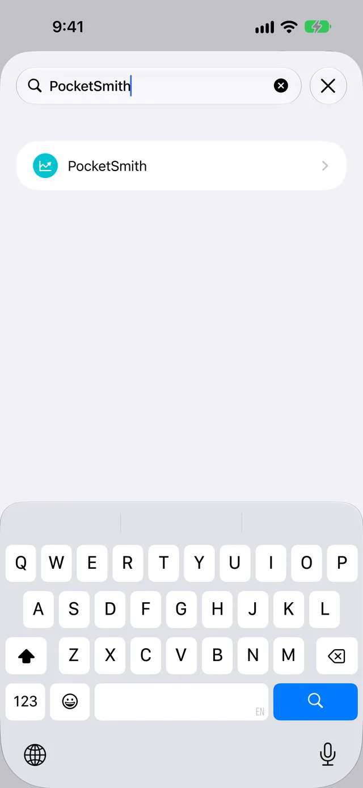
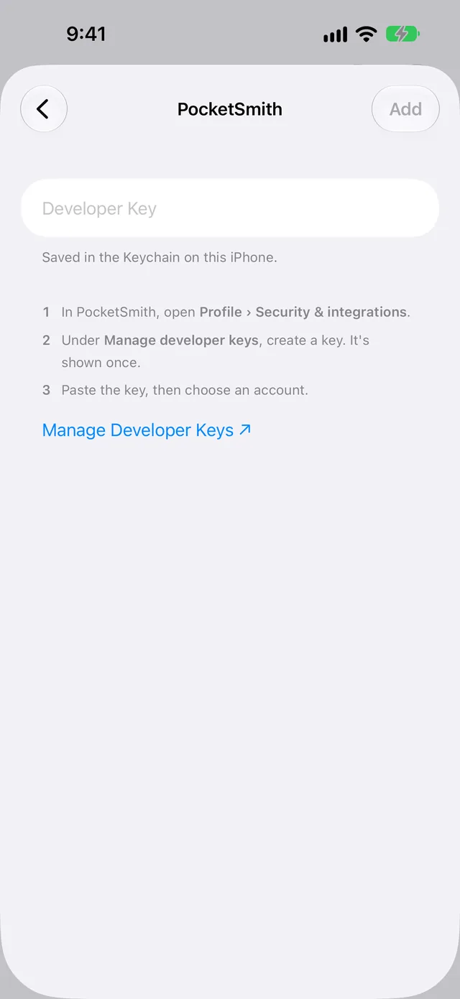
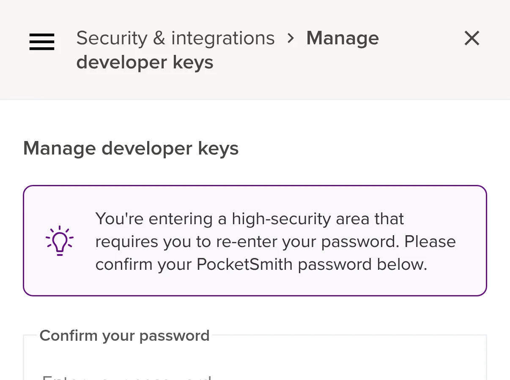
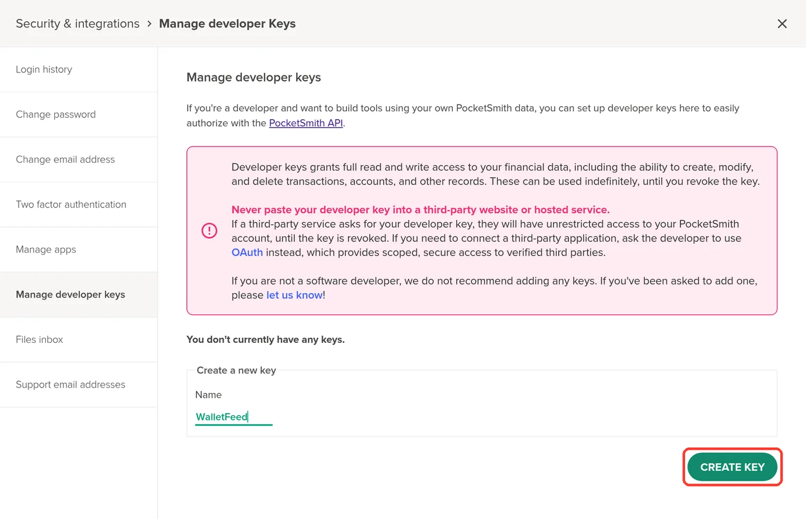
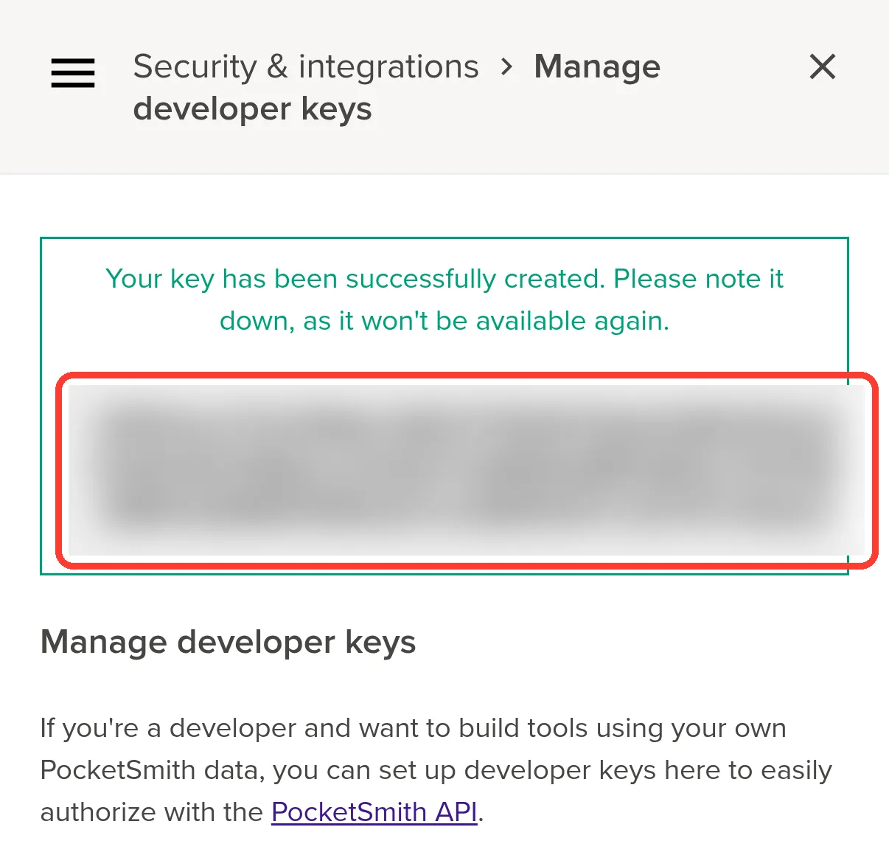
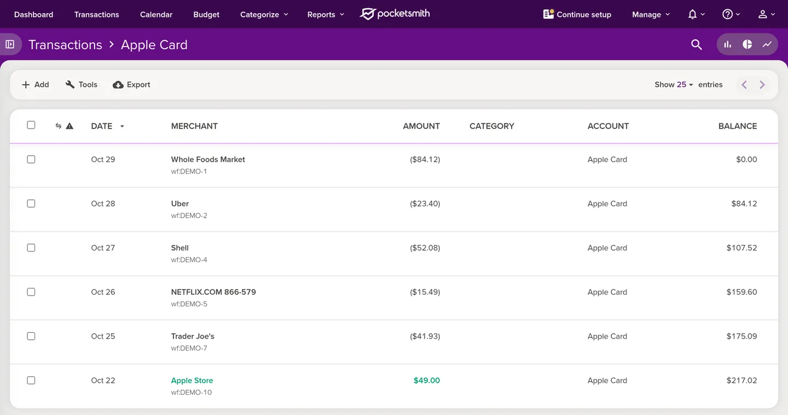
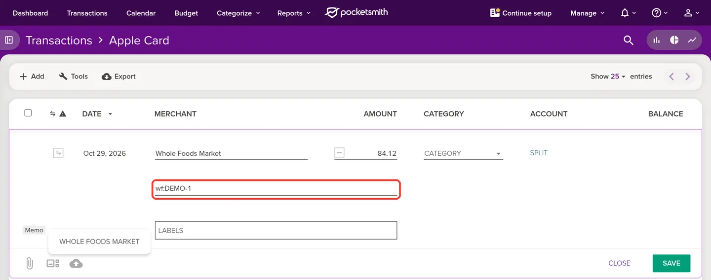
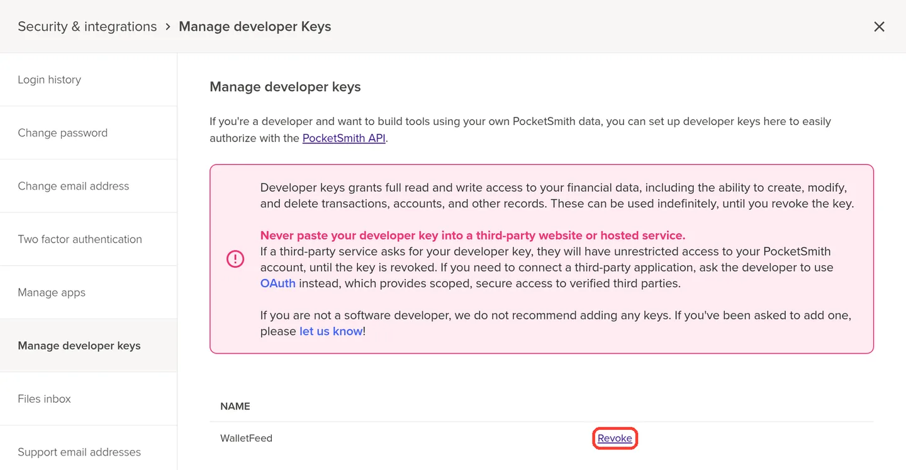

Send Apple Card transactions to PocketSmith
WalletFeed sends your Apple Card, Apple Cash and Savings transactions from your iPhone to PocketSmith. You make a developer key in PocketSmith, then you paste the key in WalletFeed.
Before you start
You must have these items:
- An iPhone with iOS 26 or a newer version. WalletFeed is available only in the US.
- WalletFeed on your iPhone, with access to your Apple Card, Apple Cash or Savings account.
- WalletFeed Pro, a subscription with a 1-week free trial, or a one-time Lifetime purchase. You must have WalletFeed Pro to send transactions to PocketSmith.
- A PocketSmith account and its password. You can use the Free plan of PocketSmith.
If you make a new PocketSmith account, select your time zone on the sign-up form. WalletFeed can find a transaction in PocketSmith only after its date starts in that time zone.
Step 1: Open the PocketSmith form in WalletFeed
-
On your iPhone, open WalletFeed.
-
Tap Destinations.
-
Tap + at the top of Destinations.

-
In the search field, type
PocketSmith. -
Tap PocketSmith.

-
If WalletFeed shows WalletFeed Pro, get WalletFeed Pro.
After you get WalletFeed Pro, WalletFeed shows the PocketSmith form.
Step 2: Make a developer key in PocketSmith
PocketSmith shows a warning on its developer keys page. The warning tells you that a developer key gives full access to your PocketSmith data until you delete the key. It tells you not to paste a key into "a third-party website or hosted service". It also tells you that PocketSmith does not recommend keys if you are not a software developer.
These facts are about the key in WalletFeed:
- WalletFeed keeps the key in the Keychain on your iPhone.
- WalletFeed sends the key directly from your iPhone to PocketSmith. WalletFeed has no account and no WalletFeed servers.
- WalletFeed uses the key to get the list of your PocketSmith accounts, and to make the Apple Card account. It also uses the key to add, change and delete the transactions that it sends.
- You can delete the key in PocketSmith. After that, WalletFeed cannot connect to PocketSmith with the key. Refer to Delete the key in PocketSmith.
To make the key on your iPhone, do these steps:
-
In the PocketSmith form, tap Manage Developer Keys.
Your web browser opens PocketSmith.

-
If PocketSmith shows Sign in to PocketSmith, sign in with your PocketSmith email address and password.
-
In Confirm your password, type your PocketSmith password.
PocketSmith shows this box each time that you open Manage developer keys.

-
Tap CONFIRM PASSWORD.
PocketSmith shows Manage developer keys and the warning. If the password is not correct, PocketSmith shows "Sorry, your password was incorrect. Try again."
-
In Create a new key, type
WalletFeedin Name.The name helps you find the WalletFeed key in the list of keys.

-
Tap CREATE KEY.
PocketSmith shows the key one time, in a box below a green message.
-
If you cannot see the key, scroll up to the green message.

-
Touch and hold the key.
-
Make sure that the highlighted text includes all of the key.
The key has 128 letters and numbers. PocketSmith has no button to copy the key.
-
Tap Copy.
Step 3: Paste the key in WalletFeed
-
Open WalletFeed again.
If WalletFeed does not show the PocketSmith form, do Step 1 again.
-
Touch and hold Developer Key.
-
Tap Paste.
WalletFeed connects to PocketSmith with the key. Then it shows Account.
-
In Account, select the account that receives your transactions.
If you select New Apple Card Account, WalletFeed makes a credit card account with the name Apple Card in PocketSmith. If PocketSmith has an account with the name Apple Card, WalletFeed selects that account.
-
Tap Add.
WalletFeed shows Send Transactions to PocketSmith? The message tells you the data that PocketSmith receives, the Wallet accounts and the start date.
-
Tap Send.
WalletFeed starts to send your transactions to PocketSmith. In Destinations, the name of the new destination is PocketSmith · and the account name, for example PocketSmith · Apple Card. If you tap Cancel, WalletFeed does not send transactions.
Step 4: Find the transactions in PocketSmith
-
On a computer, open PocketSmith in a web browser.
-
Click Transactions at the top of the page.
-
Click the panel icon adjacent to the Transactions title.
PocketSmith shows Accounts.
-
In Accounts, click Apple Card, or the account that you selected in WalletFeed.
The title changes to Transactions › Apple Card. Below each merchant, PocketSmith shows
wf:and an ID.
-
Click a transaction.
-
Click Memo.
PocketSmith shows the card statement text.

The data that PocketSmith receives
WalletFeed adds each transaction to the account that you selected in PocketSmith. This table shows the data that PocketSmith receives:
| From Wallet | In PocketSmith |
|---|---|
| The merchant name, or the description if there is no merchant name | MERCHANT |
| The amount, negative for a purchase and positive for a refund | AMOUNT |
| The date of the transaction, in the time zone of your iPhone | DATE |
| The card statement text, if it is different from the merchant name | Memo |
wf: and the ID of the transaction in Wallet |
The note below the merchant |
PocketSmith shows a purchase in parentheses, for example ($84.12). It shows a refund in green, for example $49.00.
PocketSmith receives no category and no balance. You can give each transaction a category in PocketSmith. After WalletFeed sends a transaction, WalletFeed changes only its amount and its date. Your changes to the merchant, the category and the labels stay.
The new Apple Card account starts with a balance of $0.00. PocketSmith calculates the BALANCE column from that balance. Thus, the BALANCE column can be different from the balance of your card.
Do not change or delete the wf: note. WalletFeed uses the note to find the transaction again. If the note changes, WalletFeed adds the transaction again the next time that the transaction changes in Wallet.
New transactions and changes
While WalletFeed is open, PocketSmith receives changes in seconds. When WalletFeed is closed, iOS starts WalletFeed in approximately 1 hour or less after a change in Wallet. For this, Background Sync must be on in Settings › Sync.
PocketSmith also receives pending charges. When a pending charge becomes posted, WalletFeed changes the amount and the date of the same transaction in PocketSmith. PocketSmith does not show a pending status for transactions from WalletFeed. To send only posted charges, set Filter to on, then set Include Pending to off. Refer to Send only some transactions.
WalletFeed deletes a declined charge from PocketSmith. It also deletes a transaction that Wallet removes. PocketSmith receives a refund as a different transaction, with a positive amount.
Send previous transactions
A new destination also receives previous transactions, from the start date in Settings › Sync › Initial History. Initial History is All until you change it. To change this start date, change Initial History before you add PocketSmith.
To send previous transactions again, do these steps:
-
In Destinations, tap the PocketSmith destination.
-
Tap Send History.
-
Tap 30 Days, 90 Days, 1 Year or All.
WalletFeed shows Sending History and the number of transactions that it sent. To stop, tap Send History, then Stop Sending.
WalletFeed sends a small number of previous transactions to PocketSmith, waits, and then sends more. If you have many transactions, WalletFeed can take a long time to send them all.
Send History does not add a transaction two times. WalletFeed finds each transaction by its wf: note, and it changes the transaction that it finds. If you deleted a transaction in PocketSmith, Send History adds the transaction again.
Change or stop the PocketSmith destination
You change the PocketSmith destination on its screen in Destinations. For more about this screen, refer to Destinations.
Send only some transactions
-
In Destinations, tap the PocketSmith destination.
-
Set Filter to on.
-
Change Include, Minimum, Include Pending, Accounts, Categories or Exclude.
Accounts selects the Wallet accounts that PocketSmith receives. With Apple Intelligence, you can also write the rule in words, for example "Travel over $50, not Uber". Then tap the Apple Intelligence icon.
Stop the destination for a time
-
In Destinations, tap the PocketSmith destination.
-
Set Enabled to off.
WalletFeed does not send transactions to PocketSmith until you set Enabled to on again.
Replace the key
Replace the key after you delete it in PocketSmith, or if PocketSmith does not accept the key.
-
Make a new key in PocketSmith. Refer to Step 2.
-
In Destinations, tap the PocketSmith destination.
-
Tap Replace Key.
-
Paste the new key in Developer Key.
-
Tap Replace.
WalletFeed connects to PocketSmith with the new key before it puts the key in the Keychain. Then Replace Key shows a green check mark.
Remove PocketSmith from WalletFeed
-
In Destinations, tap the PocketSmith destination.
-
Tap Delete.
-
Tap Delete again.
WalletFeed removes the destination and deletes the key from your iPhone. The transactions that WalletFeed sent stay in PocketSmith. PocketSmith continues to accept the key until you delete the key in PocketSmith.
Delete the key in PocketSmith
-
On a computer, open Manage developer keys in PocketSmith.
-
In Confirm your password, type your PocketSmith password.
-
Click CONFIRM PASSWORD.
-
In the row for WalletFeed, click Revoke.
PocketSmith deletes the key, and it does not tell you to confirm. It shows "Successfully deleted your WalletFeed key."

After you delete the key, the PocketSmith destination in WalletFeed shows "Authentication failed" when WalletFeed tries to send. To send transactions again, make a new key. Then replace the key in WalletFeed.
If there is a problem
If WalletFeed shows "Key rejected"
WalletFeed shows "Key rejected (HTTP 401). Create a new one in PocketSmith." when PocketSmith does not accept the key, for example because the copied key is not complete.
- Make a new key in PocketSmith. Refer to Step 2.
- When you copy the new key, make sure that the highlighted text includes all of the key.
- Paste the new key in Developer Key.
If the destination shows "Authentication failed"
PocketSmith does not accept the key of the destination, for example because someone deleted the key in PocketSmith.
- Make a new key in PocketSmith. Refer to Step 2.
- Replace the key in WalletFeed. Refer to Replace the key.
If you did not copy the key
PocketSmith shows a key only one time.
- In PocketSmith, open Manage developer keys again.
- In the row for WalletFeed, tap Revoke.
- Make a new key. Refer to Step 2.
If PocketSmith shows only the Welcome page
A new PocketSmith account shows the Welcome page until you complete one of its start paths.
- On the Welcome page, click a start path, for example Take guided mode.
- Complete all the steps of that path.
You can make the developer key before you complete a start path. Guided mode also makes an account with the name Main account. WalletFeed shows this account in Account.
If a transaction shows two times in PocketSmith
WalletFeed did not find the first transaction, because its wf: note changed.
- In PocketSmith, find the transaction that has no
wf:note. - Delete that transaction in PocketSmith.
If PocketSmith receives transactions only while WalletFeed is open
When Background Sync is off, WalletFeed sends transactions only while it is open.
- Tap the gear icon at the top of Destinations.
- In Settings › Sync, set Background Sync to on.
For more information, refer to Background Sync.
If WalletFeed shows "The account is gone from PocketSmith"
Someone deleted the PocketSmith account that the destination uses.
- Delete the destination. Refer to Remove PocketSmith from WalletFeed.
- Add PocketSmith again. Refer to Step 1.
Related
Updated October 30, 2026